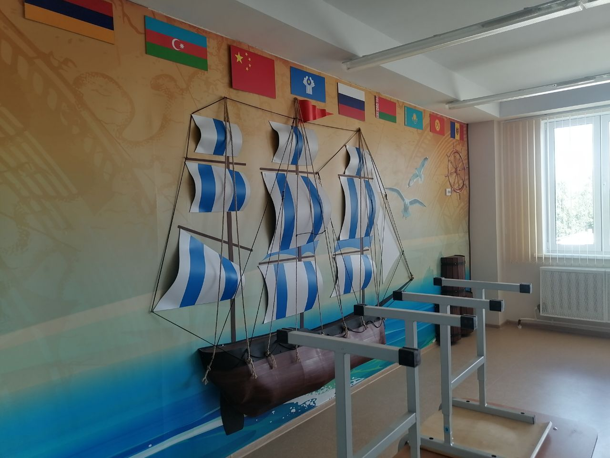
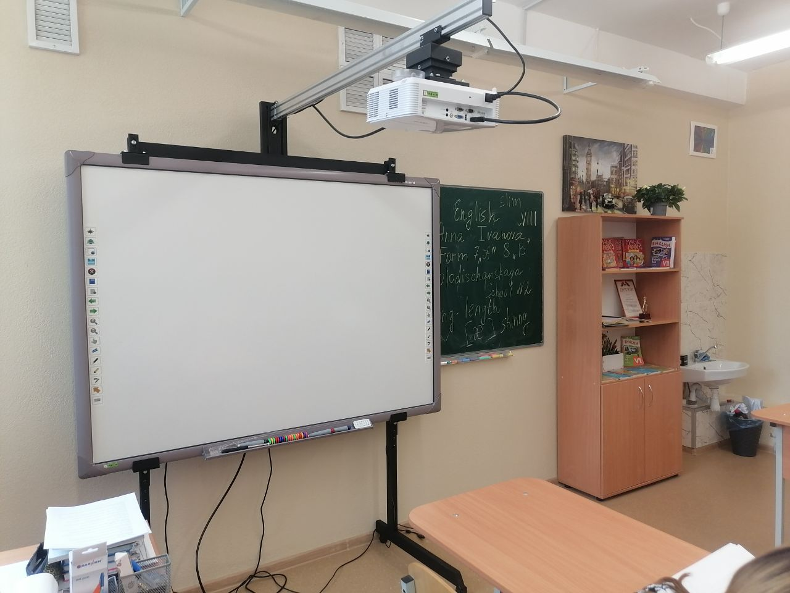
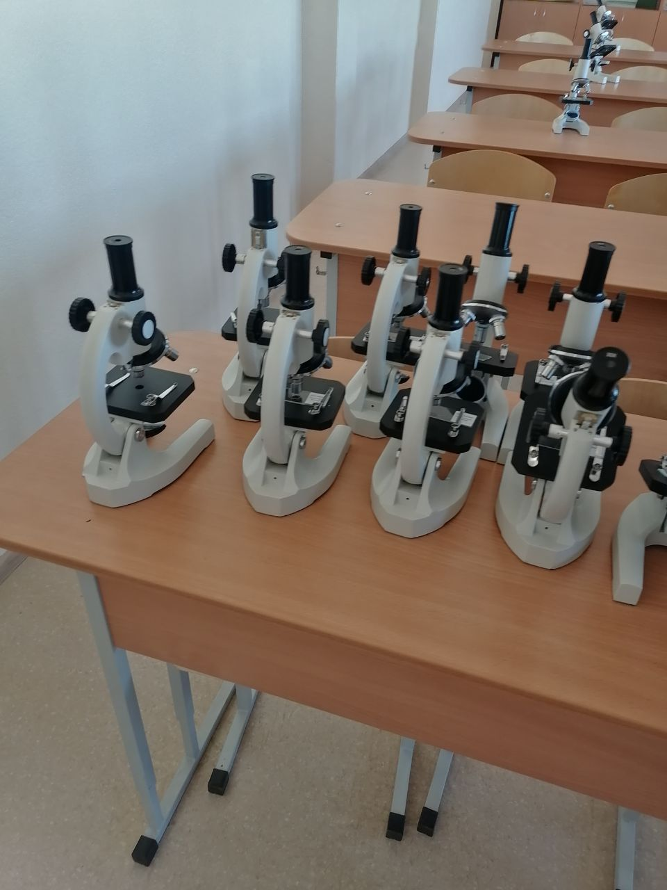
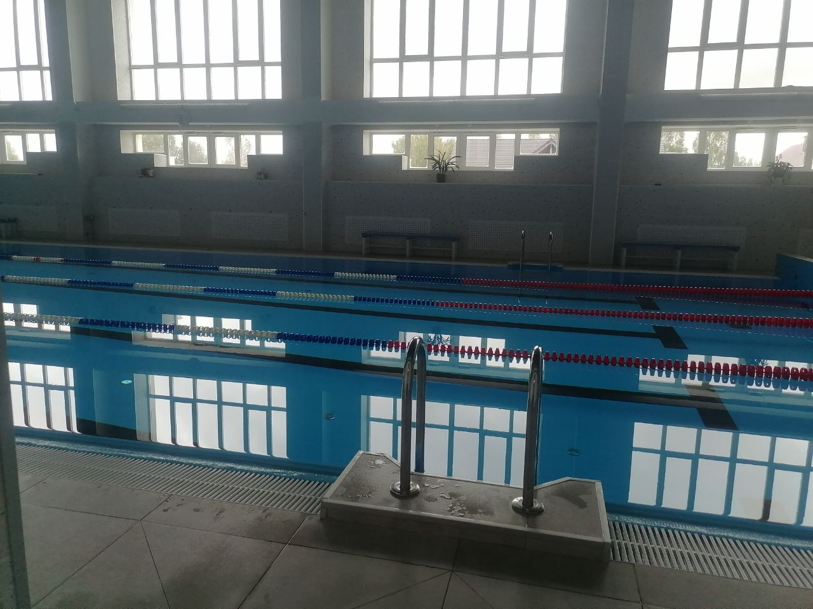
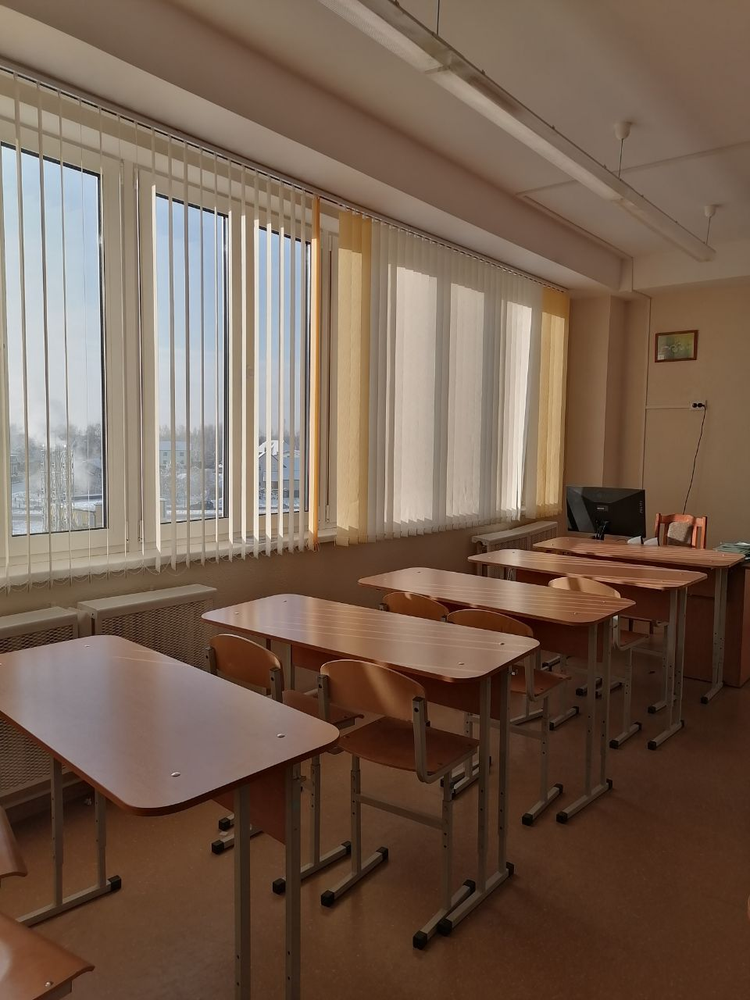

О школе
Колодищанская средняя школа номер 2 это уникальное место, где каждый учащийся может найти занятие для себя. В школе есть оборудованные классы, чтобы детям было интересно учиться. Особый интерес вызывают классы информатики, класс химии, биологии, английского и географии.
     Колодищанская средняя школа N2 готовится к открытиюНовости
- 18 января учащиеся школы ксш2 приняли участие в соревнованиях по спортивному скалолазанию!
- шестой школьный день в ксш2 вновь прошел в спортивном зале!
- 18 января учащиеся ксш2 награждались за участие в 3 республиканском этапе олимпиады по учебным предметам!
- 17 января 9-11 классы ездили на день открытых дверей!
Контакты
Телефон: +375(29)1234567
Адрес: Тихая ул.,20А, агрогородок Колодищи
Мы в соц сетях:
Инстаграмм КСШ2 Телеграмм КСШ2 Ютуб КСШ2Достижения
В Колодищанской средней школе номер 2 каждый может найти занятие для себя. В стенах государственного учреждения образования можно заниматься спортом, музыкой, танцами, гуманитарными науками (изучение языков разных стран мира вне школьной программы) и другое. Наблюдать за достижениями наших учащихся и их родителей, а также учителей, вы можете в наших социальных сетях.
Инстаграмм КСШ2 Телеграмм КСШ2 Ютуб КСШ2